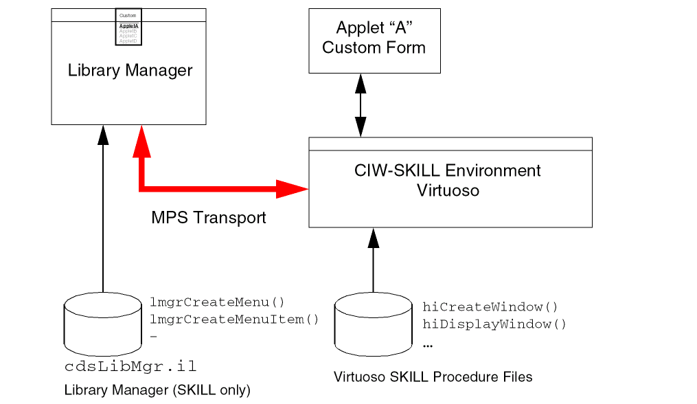

Library Manager Customizations in Standalone Mode and with Other Processes
Library Manager Customizations in Standalone Mode
The customization system does not work when you run the Library Manager stand alone. You must run it with a companion Virtuoso Studio design environment process within the same Message Passing Subsystem session. If the customization code is loaded in the Library Manager session that is running in standalone mode, the Library Manager allows only attribute changes to objects such as deletion of unmanaged label attributes. The Library Manager disallows any new objects from becoming active and then issues a warning message.
Library Manager Customization with Other Processes
The diagram shows how customization is defined and shared among various cooperating processes.

Library Manager Customizations Using SKILL Functions
Return to top